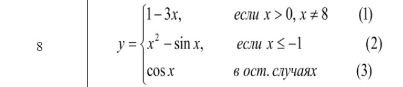

<!DOCTYPE html>
<html lang="en">
  <head>
    <meta charset="UTF-8" />
    <meta name="viewport" content="width=device-width, initial-scale=1.0" />
    <title>Title</title>
  </head>
    <body>
        <script>
            "use strict";
            document.title = "Mikita Zayats";
            let y;
            let x = parseInt(prompt('Введите x'));
                if (x > 0 && x != 8){
                    y = 1 - 3 * x;
                }
                else if (x <= -1){
                    y= x*x - Math.sin(x);
                }
                else{
                    y = cos(x);
                }
                document.write("<h4>Текст задания</h4>");
                document.write("В соответствии со своим вариантом необходимо написать Java-скрипт (<b>lab2-3.html</b>) для вычисления значения функции y. В выводимом файле предусмотреть форматирование документа," +
                "вывод текста задания на лабораторную работу, включая рисунок исходной функции, и вывод информации о разработчике скрипта.<br>");
                document.write("Вид функции<br>");
                document.write('<br>');
                document.write('<i>Ответ:</i> y = ' + y);
        </script>
    </body>
</html>